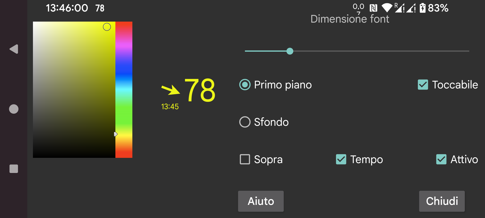

ar be de es fr hi it ja nl pl ru tr uk uz zh en
Qui puoi impostare la dimensione del carattere e i colori di primo piano e sfondo del glucosio flottante.
Toccabile: se impostato puoi spostare il glucosio flottante con il dito e rimpicciolirlo tenendolo premuto a lungo (senza muoverlo). Quando "toccabile" non è impostato, l'input touch va alla finestra sotto il glucosio flottante, quindi puoi usare l'app sotto il glucosio flottante. Puoi anche rendere il glucosio flottante non toccabile facendo doppio tap su di esso.
Trasparente: sfondo invisibile.
Sopra: mantieni visibile il glucosio flottante anche quando Juggluco è in primo piano.
Ora: timestamp del valore del glucosio.
Attivo: attivalo.
Puoi attivare e disattivare il glucosio flottante con menu centrale sinistro->Flottante.
Puoi passare a Juggluco toccando il lato della freccia del glucosio flottante. Il doppio tap sul lato del valore del glucosio fa diventare non toccabile il glucosio flottante. Tenendo premuto a lungo il valore del glucosio si ottiene la visualizzazione di solo un piccolo valore del glucosio in modo da poter interagire con ciò che c'è sotto, toccando il piccolo display lo si ingrandisce di nuovo. Muovendo mentre si tocca il lato del valore del glucosio, si sposta il glucosio flottante.
Per visualizzare sopra altre app Juggluco ha bisogno di un permesso speciale. Su WearOS e anche Android Automotive devi usare adb per concedere questo permesso:
adb shell pm grant tk.glucodata android.permission.SYSTEM_ALERT_WINDOW
Su alcuni orologi (ad esempio TicWatch Pro), puoi anche consentirlo con: Impostazioni Android/WearOS->App e notifiche->Info app->Juggluco->Avanzate->Visualizza su altre app.